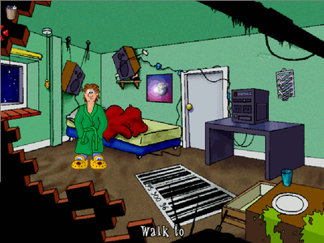
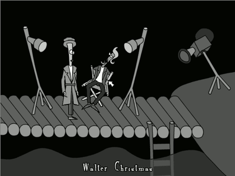
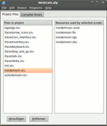
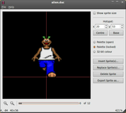
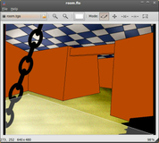
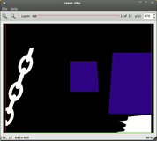
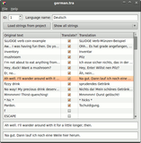

OpenSLUDGE
Dieser Artikel wurde für die folgenden Ubuntu-Versionen getestet:
Ubuntu 16.04 Xenial Xerus
Zum Verständnis dieses Artikels sind folgende Seiten hilfreich:
SLUDGE  ("Scripting Language for Unhindered Development of a Gaming Environment") ist eine Skriptsprache und dazugehörige Software für die Entwicklung von Adventure-Spielen und erinnert nicht nur vom Namen, sondern auch vom Konzept her an SCUMM. Sie wurde seit 2000 von "Hungry Software" entwickelt, ursprünglich für das Spiel Out Of Order. Inzwischen sind weitere mit SLUDGE entwickelte Spiele als Freeware veröffentlicht worden (siehe Spiele).
("Scripting Language for Unhindered Development of a Gaming Environment") ist eine Skriptsprache und dazugehörige Software für die Entwicklung von Adventure-Spielen und erinnert nicht nur vom Namen, sondern auch vom Konzept her an SCUMM. Sie wurde seit 2000 von "Hungry Software" entwickelt, ursprünglich für das Spiel Out Of Order. Inzwischen sind weitere mit SLUDGE entwickelte Spiele als Freeware veröffentlicht worden (siehe Spiele).
Anfang 2008 wurde die Software unter dem neuen Namen "OpenSLUDGE" unter der LGPL lizensiert und ist somit Open Source. OpenSLUDGE besteht aus einer Laufzeitumgebung (Runtime Engine), die das Spielen aller SLUDGE-Spiele ermöglicht, sowie dem "Development Kit", einer Sammlung von Entwicklungswerkzeugen. Inzwischen ist OpenSLUDGE für Linux, Windows und Mac verfügbar.
|  |
| Out Of Order |
Installation¶
SLUDGE kann über die Paketverwaltung mit Hilfe folgender Pakete installiert [1] werden:
sludge-engine (universe)
sludge-devkit (universe, optional)
sludge-doc (universe, optional)
sludge-compiler (universe, optional)
 mit apturl
mit apturl
Paketliste zum Kopieren:
sudo apt-get install sludge-engine sludge-devkit sludge-doc sludge-compiler
sudo aptitude install sludge-engine sludge-devkit sludge-doc sludge-compiler
Benutzung der Engine¶
Den Spielen liegt immer eine Spieldatei bei, die meist gamedata heißt oder auf .slg oder .dat endet. Liegt das Spiel nur als Windows-Installer vor, so kann man die Spieldatei extrahieren, indem man die Installation mit Hilfe von Wine ausführt und die Spieldatei aus dem Installationsverzeichnis verwendet.
Diese öffnet man vom Terminal [2] aus mit
sludge-engine [Optionen] Spieldatei
| Startoptionen | |
| Option | Beschreibung |
--help | Hilfe zu den Startoptionen |
--window | Fenstermodus |
--fullscreen | Vollbildmodus |
--antialias=0 oder--antialias=1 | Antialiasing de-/aktivieren |
--list-languages | Verfügbare Sprachen und deren Index anzeigen |
--language=n | Sprachauswahl (n >= 0, Sprachindex siehe oben) |
Falls gewünscht kann jetzt je vorhandenem SLUDGE-Spiel ein Menüeintrag [3] angelegt werden.
Während des Spielens kann man jederzeit mittels Alt + ⏎ zwischen Fenster- und Vollbildmodus umschalten oder mit Alt + A das Antialiasing (de)aktivieren.
|  |
| Cubert Badbone, P.I. |
Spiele¶
Es folgt eine Auswahl verfügbarer Spiele. Die Spiele sind gewöhnlich auf Englisch und können alle kostenlos heruntergeladen werden. "Cubert Badbone, P.I." bietet als einziges eine deutsche Übersetzung, sie kann mit der Option --language=3 aktiviert werden.
Out Of Order (Ubuntu-Paket, hierfür muss SLUDGE ebenfalls per Paket installiert worden sein; ansonsten Archiv mit Spieldatei von hier
 (*.orig.tar.bz2))
(*.orig.tar.bz2))
Benutzung des Dev Kits¶
Für das Dev Kit existiert eine ausführliche Dokumentation . Sofern das Paket sludge-doc installiert wurde, findes man diese Dokumentation unter /usr/share/doc/sludge/SLUDGE_Help.html. Zusätzlich findet man unter /usr/share/doc/sludge/ExampleProjects/ zwei Beispielprojekte, an denen man sich orientieren kann. Zusätzlich findet man auf der Projektseite weitere Beispiele.
Die Projektvorstellung von SLUDGE auf Ikhaya (2011/10) umfasst auch eine deutsche Kurzanleitung. Hier nur eine kurze Auflistung der Programme und der Dateitypen, zu dessen Bearbeitung sie dienen.
|  |
| Project Manager |
|  |
| Sprite Bank Editor |
|  |
| Floor Maker |
|  |
| Z-Buffer Maker |
|  |
| Translation Editor |
Project Manager¶
Zu starten mit
sludge-projectmanager
Der "Project Manager" dient zum Erstellen von Projekt-Dateien und zum Kompilieren von SLUDGE-Spielen. Eine Projekt-Datei enthält projektspezifische Optionen und eine Liste der zum Projekt gehörenden SLUDGE-Skripte.
Sprite Bank Editor¶
Zu starten mit
sludge-spritebankeditor
Eine "Sprite Bank" enthält zusammengehörige Bilder, aus denen man in SLUDGE-Skripten animierte Objekte erstellt.
Floor Maker¶
Zu starten mit
sludge-floormaker
Eine Floor-Datei pro Spielszene enthält die Information darüber, in welchem Gebiet die Spielfigur herumlaufen kann.
Z-Buffer Maker¶
Zu starten mit
sludge-zbuffermaker
Z-Buffer-Dateien dienen dazu, Bereiche einer Spielszene zu definieren, hinter denen die Spielfigur verschwindet.
Translation Editor¶
Zu starten mit
sludge-translationeditor
Übersetzungsdateien erhalten zu jedem zu übersetzenden String eines Spiels eine Übersetzung. Eine kompiliertes Spiel kann beliebig viele Übersetzungen beinhalten.
- Erstellt mit Inyoka
-
 2004 – 2017 ubuntuusers.de • Einige Rechte vorbehalten
2004 – 2017 ubuntuusers.de • Einige Rechte vorbehalten
Lizenz • Kontakt • Datenschutz • Impressum • Serverstatus -
Serverhousing gespendet von